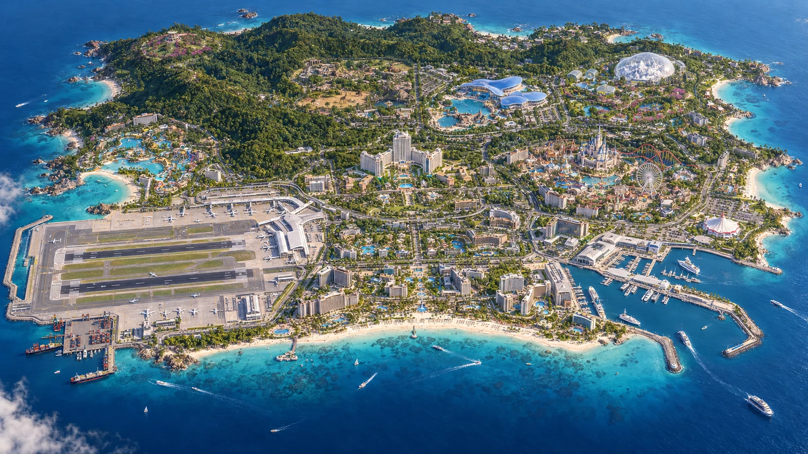

01 / FAMILY DAY
午前は大水槽、午後は牧場へ
北の水族館とふれあい牧場へ。サバンナの観察も、水辺の生きもの探しも、北だけで楽しめます。
北エリアの施設を見る →
景観イメージISLAND MAP
気になるエリアを選ぶと、施設と行き方を確認できます。
A DAY ON EDEN
01 / FAMILY DAY
北の水族館とふれあい牧場へ。サバンナの観察も、水辺の生きもの探しも、北だけで楽しめます。
北エリアの施設を見る →02 / SUNSET DAY
南ビーチで海を眺めて、夕暮れにはパール湾へ。劇場と遊歩道の灯りを楽しむルートです。
南エリアの施設を見る →